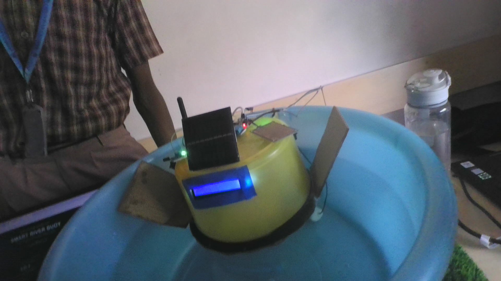
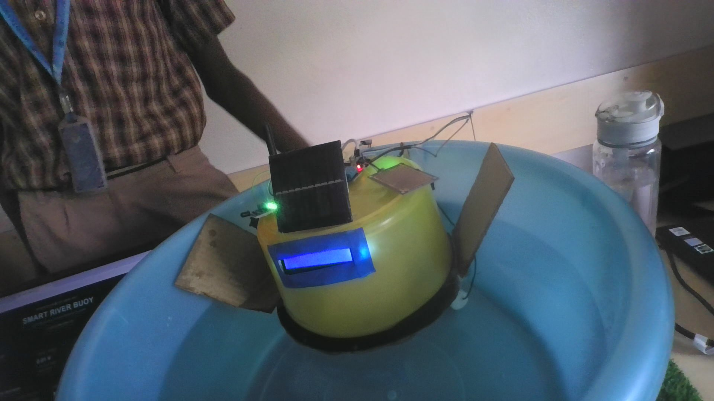
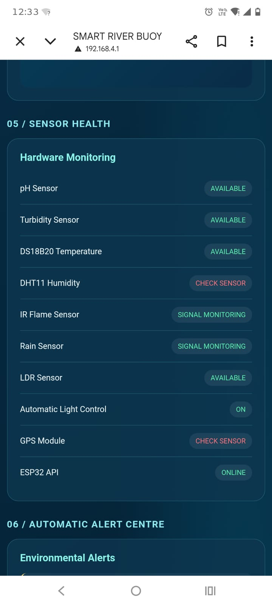

MONITOR. DETECT. CLEAN. PROTECT.Scroll to explore ↓
01 — The challenge
What goes unseen doesn’t go away.
Rivers carry the evidence of our everyday choices. Floating plastic, submerged debris and changing water conditions can be difficult to observe across long, changing waterways.
Conventional checks are often periodic and location-specific. RiverGuard AI is conceived as a supplementary observation point - designed to make visible patterns that may otherwise be missed.
RiverGuard AI combines environmental sensing, dual-layer camera observation, mapping, communication and practical support modules in one proposed river platform.
Two distinct visual pathways give the system a more complete view of visible river pollution.

Prototype water test / 01
Surface AI
See what is floating now.
A surface camera system is proposed to identify bottles, bags, packaging and debris; estimate visible quantity and coverage; then suggest cleaning priority and approximate team needs.
Underwater AI
Observe what settles below.
A submerged camera connected by tethered wired data link is proposed to capture underwater imagery. Observations are associated with the platform's active surface GPS location.

Prototype water test / 02
04 — Integrated architecture
Nine ways to stay attentive.
01
Water quality monitoring
pH, turbidity, temperature and alert readings.
02
Environmental monitoring
Local rain, air and ambient light context.
03 / 04
Surface & underwater AI
Visible pollution observation across the waterline, linked to a spatial context.
05
Aquatic life protection
Supplementary aeration support.
06
Fire detection & water pump
Alerting and controlled water circulation.
07
GPS & communication
Location, digital mapping and notice channels.
08 / 09
Display, mobility & power
Onboard status, propulsion and solar-assisted power.
05 — Complete capability index
All 41 features, made legible.
Each feature describes a planned system capability. They are not claims of live deployment or independently verified performance.
06 — Field workflow
A signal becomes a next step.
01Sense
Environmental sensors collect readings.
02Observe
Surface and underwater cameras capture images.
03Analyse
AI identifies visible pollution.
04Locate
GPS associates observations with coordinates.
05Prioritise
Urgency and cleaning requirements are estimated.
06Report
Alerts and observations are communicated.
07Support
Collection and aeration mechanisms provide assistance.

Sensor health / prototype interface
07 — Hardware language
Built from parts with a purpose.
Sensor suite, camera units, microcontrollers, GPS and communication modules, pump, propulsion motors, solar charging, battery monitoring and protective enclosure form the proposed component ecosystem.
02 More timely observation of unusual water conditions
03 Better-organised cleaning operations
04 Supplementary local aquatic habitat support
05 Environmental data for future learning
Potential benefits, not experimentally verified environmental outcomes.
09 — Why RiverGuard
Care for a river starts with paying attention.
RiverGuard AI imagines a practical, more observant way to support the people already protecting waterways. It is an environmental technology initiative grounded in the idea that better context can support better decisions.
RiverGuard can support observation of water conditions, visible pollution and response planning. Real rivers need careful monitoring, field validation and coordinated human action.